画像にリンクがはってあるものは、クリックすると別窓で大きめサイズが表示されます。
| 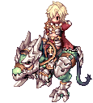 | ||||
| 攻撃待機 | 攻撃剣 | 攻撃槍 | 騎乗攻撃 | ダメージ |
| 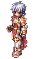 | 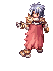 | 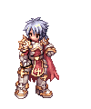 | 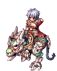 | 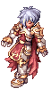 | 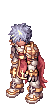 | 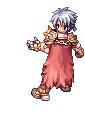 | 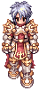 |
| 攻撃待機 | 攻撃剣 | 攻撃槍 | 騎乗攻撃 | ダメージ | 拾う | 攻撃？ | 歩く |
| 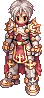 | 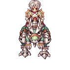 | 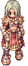 | 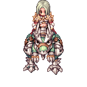 |
| 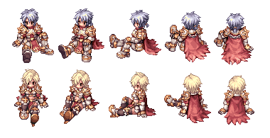 |  |
| 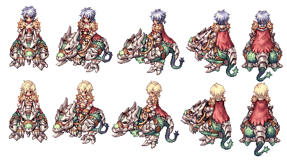 |  |
back
(c) Gravity Co., Ltd. & Lee MyoungJin(studio DTDS). All rights reserved.
(c) GungHo Online Entertainment, Inc. All Rights Reserved.
当コンテンツの再利用（再転載・配布など）は、禁止しています。